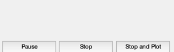
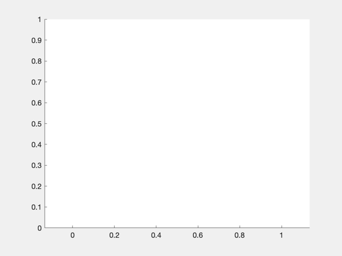
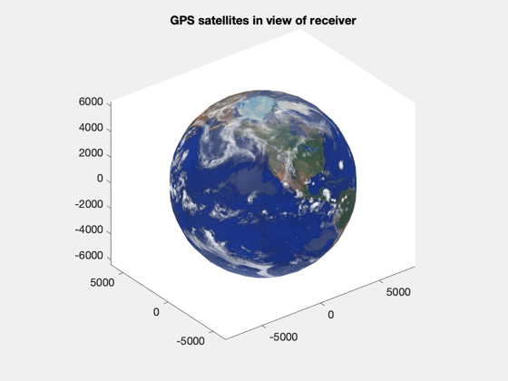
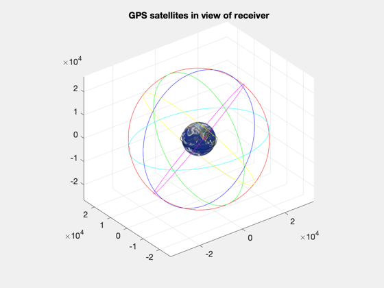
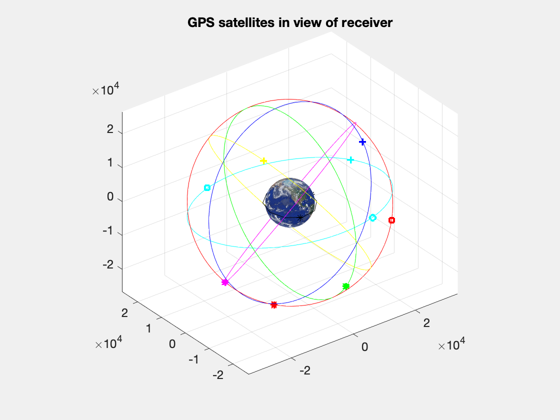

Demonstrate GPS navigation message model.
This routine runs the receiver model using the navigation message and GPSOrbit. The satellites in view of the receiver are plotted at each step. ------------------------------------------------------------------------- See also GPSReceiverNav., Map, TimeGUI, Date2JD, RVFromKepler -------------------------------------------------------------------------
Contents
%-------------------------------------------------------------------------- % Copyright 2003 Princeton Satellite Systems, Inc. All rights reserved. %-------------------------------------------------------------------------- GPSReceiverNav( 'initialize' ); dT = 600; t = 0:dT:6*3600; jD0 = Date2JD; el = [7000 0.1 0 0 0 0]; [r,v] = RVFromKepler( el, t ); steps = length(t); tToGoMem.lastJD = 0; tToGoMem.lastStepsDone = 0; tToGoMem.kAve = 0; [ rRT, tToGoMem ] = TimeGUI( steps, 0, tToGoMem, 1, dT, 'GPSNavDemo' ); h = NewFig('GPS Satellites in View','renderer','zbuffer'); axis equal; 
Each point type is a different GPS satellite
%---------------------------------------------- point = {'bo' 'b*' 'bs' 'b+',... 'ro' 'r*' 'rs' 'r+',... 'go' 'g*' 'gs' 'g+',... 'yo' 'y*' 'ys' 'y+',... 'co' 'c*' 'cs' 'c+',... 'mo' 'm*' 'ms' 'm+'};
Plot Earth
%------------ p = Map('Earth'); [x,y,z] = sphere(24); hSurf = surface(p.radius*x,p.radius*y,p.radius*z); % PSS note: using zbuffer renderer for figure is workaround for crash % caused by the Earth texture applied below set(hSurf,'CData',double(flipud(p.planetMap)),'FaceColor','texturemap',... 'edgecolor','none','EdgeLighting', 'none','FaceLighting', 'none') colormap( p.planetColorMap ); view(3); title('GPS satellites in view of receiver')
Plot the GPS orbital planes
%----------------------------- hold on; grid on; W = [272.847 332.847 32.847 92.847 152.847 212.847]*pi/180; for k = 1:6 z = RVFromKepler( [26559.8;55*pi/180;W(k);0;0;0] ); plot3( z(1,:), z(2,:), z(3,:), point{k*4}(1) ) end
Plot the receiver orbit plane
%------------------------------- plot3( r(1,1:12), r(2,1:12), r(3,1:12), 'k' )
Step through model updates
%---------------------------- d = []; p = []; for k = 1:steps [ rRT, tToGoMem ] = TimeGUI( steps, k, tToGoMem, rRT, dT ); d.jD = jD0 + t(k)/86400; d.r = r(:,k); d.v = v(:,k); d.clockError = [1e-8; 1e-11]*randn; GPSReceiverNav( 'update', d ); gPS = GPSReceiverNav( 'get output' ); % Plot satellites in view %------------------------ figure(h); delete(p); p = []; for j = 1:gPS.nSatellites iD = gPS.id(j); p(j) = plot3(gPS.rGPS(1,j),gPS.rGPS(2,j),gPS.rGPS(3,j),point{iD},'linewidth',2); end p(j+1) = plot3(d.r(1),d.r(2),d.r(3),'k*'); end rotate3d; TimeGUI('close'); %-------------------------------------- % PSS internal file version information %--------------------------------------